-
のどかGuiEdit とは
汎用キーバインディング変更ソフト「のどか」の設定ファイルをGUI操作で編集できる機能を持ちます。
32bitプログラムであり、Visual Studio 2010 C# で記述されています。Windows XP以降での環境をサポートします。
もし実行ファイル単体で、「のどか」がインストールされたPCとは異なる環境で動作させる場合、Microsoft .Net Framework 4.0のランタイムのインストールが必要となることがあります。
「のどか」のインストールや、.Net Framework 4.0のインストールについては、こちらをご覧ください。
1.00から1.03までのバージョン履歴も、ご覧ください。
「注意」
未実装、制限事項や、バグも存在するので、大事な設定ファイルは必ず、別途別の場所へ保存されることをお勧めします。失われた設定ファイルを回復する手段は存在しません。
未保証であり、現在の動作は、あるがままとなります。仕様、制限事項、バグの項もご覧ください。ご了承ご理解いただけない場合には、ただちにご利用をおやめください。
コンテンツ
用語の説明
特徴
起動終了方法
編集画面メイン 起動画面 設定ファイルを開いたとき メイン画面各部位の説明 右クリックしたときのメニュー
コマンドウィザード
設定ダイアログ 表示関係 ホームディレクトリ検索順
実際に使い始めた最初に実施された方が良いこと
サンプルの設定ファイルの編集方法
仕様、制限、バグ
著作権、ライセンス、使用許諾
バージョン履歴
-
用語の説明
キャプション： 「のどか」設定ファイルの1行ごとに説明文を付けることができます。その説明文のことを、本プログラムでは、キャプションと呼びます。
なお設定ファイル上では、文末に位置するコメントとして記述されます。またGUI画面上では、説明(キャプション)と表記しています。
-
特徴
・「のどか」の設定ファイルと互換性を保ちながらも、GUI編集できることを目標としています。
・各行にキャプションを付けることで、その行に指定されたキーバインド変更内容の理解に役立ちます。
・各行を個別に、あるいは複数行まとめてコメント化、あるいはコメントを取りやめることで、機能のオンオフが簡単に指定可能です。
・コマンドウィザード機能を用いて、キー名称をリストボックスから簡単に選択可能です。
-
起動終了方法
通常、「のどか」の設定ダイアログの「GUI編集」ボタンから起動できます。その場合、設定ファイルは自動的に読み込まれ、終了時には、設定ファイルは自動保存されるモードとなります。
のどかGuiEdit(GuiEdit.exe)単体でも起動終了可能ですが、その場合には、メニューの設定でチェックを付けた場合を除いて、自動保存モードにはなりません。
-
編集画面メイン
(1) 起動画面
起動した場合、下記のようなメインダイアログが表示されます。
これでは、どこから入力してよいのか不明だと思います。そこで左上のファイルメニューから「開く」を選択し、設定ファイルを選んで開いた場合を次に示します。
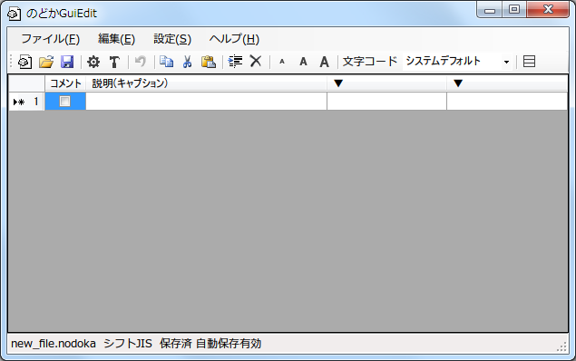
図1．起動画面
(2) 設定ファイルを開いた場合
こちらがデフォルトのdot.nodoka設定ファイルを開いた時の画面です。ウィンドウを左右上下に広げました。
少しニュアンスが伝わると思います。従来、設定ファイルをテキストエディタで開いた場合と比べると、画面の右側に従来の記述が似たような感じで表示されます 。
画面の左側の説明(キャプション)部分と、コメント(その行の有効化/無効化)のチェックボックスが存在することが大きな違いとなります。
次に、このメイン画面の各部位の説明を行います。
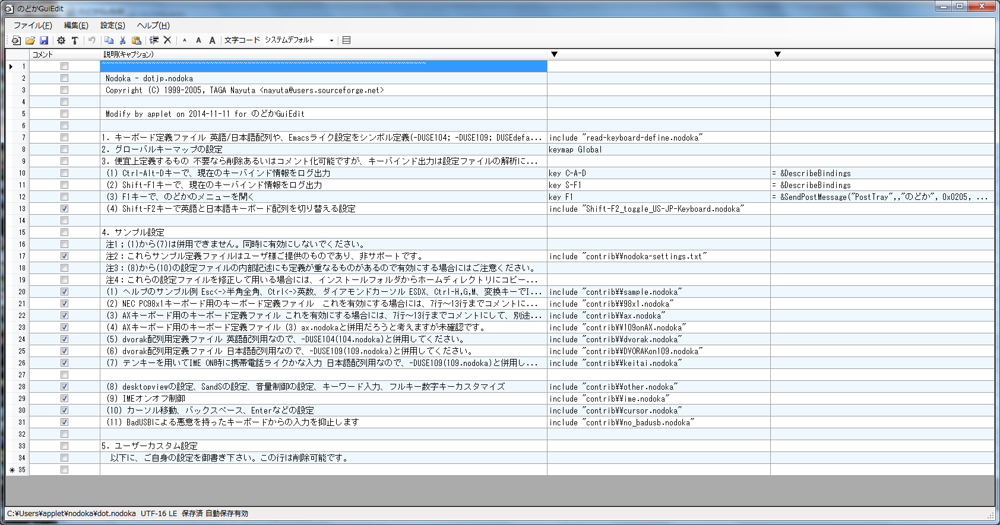
図２. デフォルトのdot.nodokaを読み込ませた画面
(3) メイン画面の各部位の説明
下記の図3に、メイン画面の各部位の説明を示します。
- 行全体について -
・左端の行番号が書かれた部位をクリックすると、行全体を選択したことになります。
・コピー、カット、ペースト、挿入、削除ボタンは行単位で機能します。
・複数行を選択するには、シフトキーを押しながらか、コントロールキーを押しながらで、複数行選択が可能です。
- 行単位のでの機能のオンオフやキャプションについて -
・各行は、行ごとのチェックボックスを☑すれば、コメント行となり、機能のオフとなります。オンにするには、チェックを外してください。
・複数行選択されているときには、一番上の「コメント」と書かれているところをクリックすれば、選択行全体のコメント化(無効化)、あるいは有効化が切り替わります。
・説明(キャプション)には、行がコメント化(無効化)、あるいは有効化に関係なく、コメントとして入力できます。
- コマンド入力 -
・コマンド入力領域の左辺と右辺には、のどかの設定ファイルでのコマンドにおける「=」か「:」で区切られた左辺と右辺を入力可能です。
左辺、右辺に区切られないコマンド記述の場合は、左辺に入れてください。
右辺の文末に、「\」を入れると、次の行にネストする継続行となります。その場合、説明(キャプション)を入れることはできません。(入力できますが、継続行扱いになりません。)
- 設定ファイル 文字コード -
・ 設定ファイルの文字コードは、初期設定ではシステムデフォルトとしています。設定ファイルに用いている文字コードが、ASCIIや、Unicodeなどであることがあらかじめ判明している場合には、適切な文字コードを設定してください。
設定ファイルを読み込んだ時に、のどかGuiEditとして認識している文字コードを、ウィンドウの下部ステータス表示領域に表示します。もし誤っていたり、実際に表示されている文字が化けている場合には適切ではありません。
なお、設定ファイル保存時には、操作なしでは読み込んだ時に認識した文字コードで保存します。もし違う文字コードにしたい場合には、右上の文字コードの選択を変更してください。
- その他 -
・下記図では説明していませんが、ボタンのうち、左側からの3個は、新規、ファイルを開く、上書き保存となります。また、真ん中から右への3個のAのボタンは、フォントサイズを変更し、左から小さくする、標準に戻す。大きくする。です。
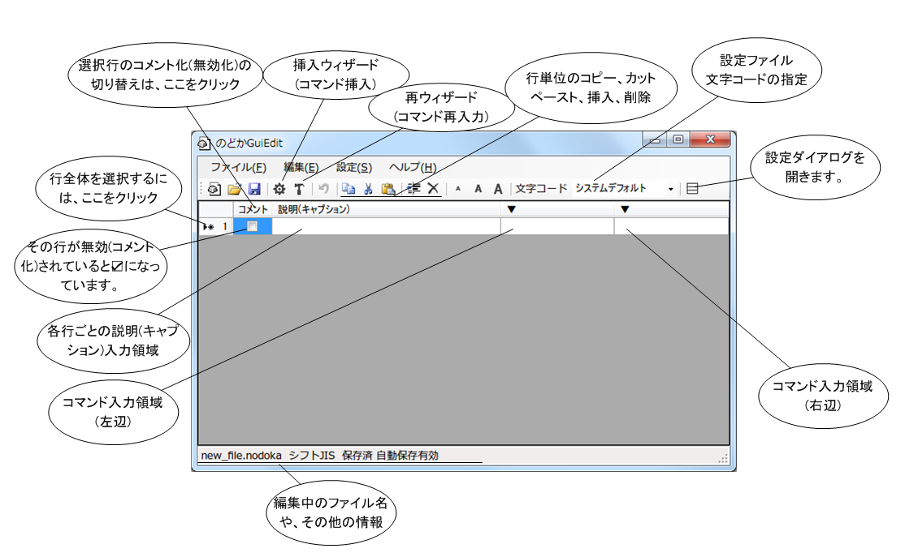
図３. メイン画面の説明
(4) 右クリックした際、メニュー表示
メイン画面において、右ボタンクリックを行うと、下記メニューが表示されます。
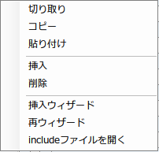
図４. 右クリックメニュー画面
これは、メニューやボタンから選択されるものと同じ機能を、マウスで操作できるようにしたものです。
なお、いずれも行全体に対するものとなるので、ご注意ください。
一番下の「includeファイルを開く」は、メニューにもボタンにも存在しませんが、ダブルクリックでも機能します。
クリックした行に、include文記述が無ければ機能しません。
続いて、コマンドウィザード(挿入ウィザード、再ウィザード)について説明を行います。
-
コマンドウィザード
下記が、挿入ウィザードボタンあるいは、再ウィザードボタンを押したときに開くウィンドウです。
コマンドウィザードとは、「のどか」の構文を構成する記述を、マウスで選択しながら入力可能となる機能です。
挿入ウィザードの場合には、コマンド指定は「key」になります。
再ウィザードの場合は、認識できサポートしているコマンドならば、コマンド指定はそれに合わせますが、認識できない場合、あるいは非サポートの場合は、「other」になります。
この画面では、コマンドの選択、説明(キャプション)の入力が可能です。
説明(キャプション)は、コマンド指定すると、すでに入力されたものがデフォルトの文言に置き換わるのでご注意ください。
以降の説明では、「key」がコマンドとして指定されたとして、説明を進めます。他の現在サポートしているコマンド(keymap, mod, include, other)については説明を省きますが、概ね下記説明と同様の動きとなります。
続いて、「次」ボタンを押すと、次のタブに移動します。
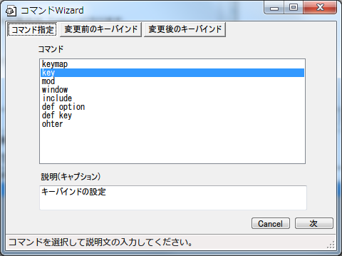
図5. コマンドWizradにおける最初の画面
下記が、次のタブに移った状態です。
変更前のキーバインドを入力することになります。
まず、画面の下部で、他のモディファイヤを無視する。および、キーボードの種別101/104か、106/109かを選択してください。日本語キーボードならば106/109を選択することになります。
他のモディファイヤを無視するに☑すると、key指定する行に、「*」が挿入されます。
画面の下側で、モディファイヤ、キーの種類、キーを順にマウスでクリックしていけば、画面の上側下のエディットボックスにコマンド記述が自動生成されます。
なお、マウスで選択できない記述(モディファイヤなら「~」や「U-」「D-」など)の場合には、直接キー入力することも可能です。その場合には、画面下部の選択は実施しないでください。(上書きされてしまいます。)
続いて、「次」ボタンを押して、次のタブに移ります。

図6. コマンドWizardにおける次の画面
下記が、さらに次のタブに移った状態です。
変更後のキーバインドを入力することになります。
まず、画面の下部の追加モードのチェックボックスをチェックするかどうかご検討ください。
☑すると、下部で選択したキーを連続して、追加挿入することが可能です。下記では、「N」「O」「D」「O」「K」「A」を順番に入力した例となります。
もし、ここで、下部のリストボックスをマウスでクリックせずに、直接、上側のエデットボックスに入力する場合、文頭の「=」を忘れずに入力してください。
key文など、「=」が必要な構文の場合、入力し忘れると、「のどか」にロードした際、エラーとなります。
すべて入力が終わったら、「OK」ボタンを押してください。入力内容を破棄する場合には、「Cancel」ボタンをいつでも押すことも可能です。
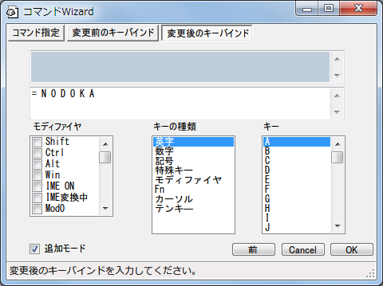
図７. コマンドWizardにおける さらに次の画面
下記が、コマンドウィザードを用いて入力したあとで、メイン画面に戻った時の例となります。

図８. メイン画面に戻った際の画面
-
設定ダイアログ
右端のボタン(長方形が3段重ねたもの)をクリックすると、下記の設定ダイアログを表示します。
(1) 表示関係の設定
最初のタブは「表示」関係の設定項目であり、使用している文字フォントや、文字や背景色の設定、ならびに終了時にウィンドウ位置やサイズを覚えるオプション設定となります。
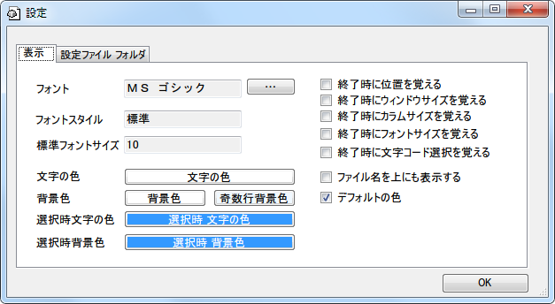
図９. 設定ダイアログ 表示設定の画面
1) フォント、フォントスタイル、標準フォントサイズ
メイン画面に表示される設定ファイル内容であるキャプションやコマンド(左辺、右辺)の表示で用いるフォントとなります。
変更したい場合には、フォントの右側のボタンをクリックしてください。フォントは等幅であるMSゴシックなどが適切だろうと考えています。
なお、フォントサイズは起動時の標準サイズの指定となるため、変更して、本設定ダイアログを閉じたとしても、フォントサイズだけは反映されません。表示を変更したい場合には、文字の大きさを標準に戻すボタン(真ん中のA)をクリックしてください。
2) 文字の色、背景色、奇数行背景色、選択時の文字の色、選択時の背景色
それぞれ、メイン画面に表示される設定ファイル内容表示に用いる色設定となります。変更したい場合には、まず、右側一番下のデフォルトの色のチェックボックスのチェックを外して、それぞれのボタンをクリックしてください。
3) 終了時に位置を覚える、終了時にウィンドウサイズを覚える、終了時にカラムサイズを覚える、終了時にフォントサイズを覚える、終了時に文字コード選択を覚える
それぞれ、メイン画面の表示位置や、ウィンドウサイズ、コマンド入力領域のカラム幅変更などを、終了時に覚えることで、次の起動時に、その設定で動作します。
フォントサイズを覚えさせると、標準フォントサイズでの設定よりも、メイン画面で便宜上変更していたフォントサイズが標準サイズとして、次回起動時に用いられます。
文字コード選択は、一度覚えさせると、次回からも、その文字コードを使うようになりますが、便宜上変更して終了させると、そちらが保存され採用されるため、よく使う文字コードが存在する場合、一度覚えさせたら、あとはチェックを外した方が良いでしょう。
4) ファイル名を上にも表示する
編集中のファイル名を、メイン画面上部にも表示させるオプションです。
(2) 設定ファイルフォルダの表示およびフォルダオープン
次のタブは、設定ファイルのフォルダ、すなわち設定ファイルを検索するホームディレクトリ情報の表示となります。
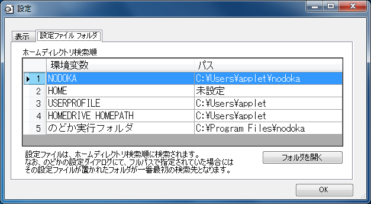
図１０. 設定ダイアログ 設定ファイルフォルダの画面
「のどか」では、設定ファイルをホームディレクトリとして決めたところから順に検索する仕様となっていますが、その一覧が表示されます。
各行をクリックして選択したあとで、右下の「フォルダを開く」ボタンで、そのフォルダをExplorerで開きます。設定ファイルのファイル整理などを行うことが可能です。
ここで、未設定や不明の場合には、Explorerを起動しません。なお、存在しないフォルダが設定されている場合には、エラーダイアログを表示します。
環境変数 NODOKAが未設定の場合には、未設定と表示されます。環境変数 HOMEは一般に未設定ですが、USERPROFILE、HOMEDRIVE、HOMEPATHは、Windowsのアカウント作成と同時に設定されるため変更できません。
のどか実行フォルダは、のどか未実行の場合には不明と表示されます。
-
実際に使い始めた際に実施したほうが良いこと
図２. デフォルトのdot.nodokaを読み込ませた画面で示したように、デフォルトのdot.nodokaでは、contribフォルダの設定ファイルを参照しています。しかし、このファイルは 「のどか」インストール先に存在するので、管理者権限が無いと編集できず、またアップデイトや再インストールなどを実施すると上書きされ、設定などを変更されていても失われてしまいます。
そこで、まず最初に実施したほうが良いこととは、contribフォルダを、ご自身のホームディレクトリにコピーすることです。
具体的には、まず図10 設定ダイアログ 設定ファイルフォルダの画面から、下記二つの設定ファイルフォルダをExplorerで開きます。
下記の図のように、ホームディレクトリ検索順１番の環境変数NODOKAのフォルダを右に、ホームディレクトリ検索順５番のフォルダを左に置いてください。
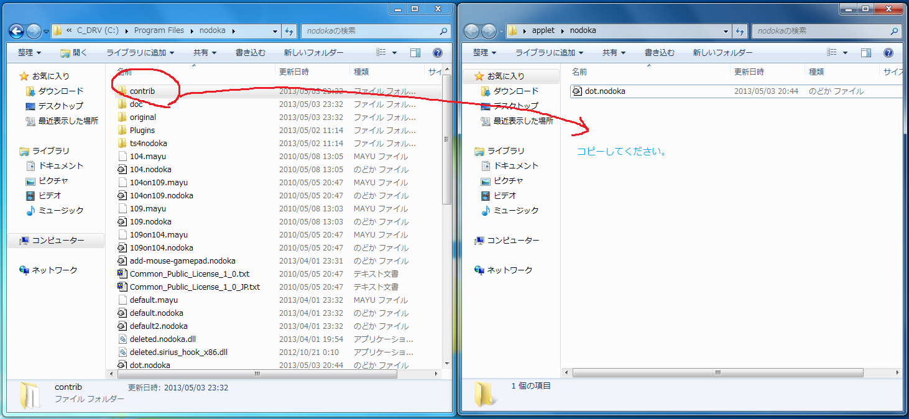
図１１. contribフォルダをコピーする。
続いて、左側のcontribフォルダを、右側のnodokaフォルダにコピーしてください。 なおマウスを使ったドラッグ&ドロップの場合には、通常コピーになるので、キーボードのCtrlキーを押しながら実行してください。
ここで、上記図１１の右側のウィンドウと同じ状態になるには二つの作業が実は必要となっています。
１）のどかのインストール時に、環境変数NODOKAが指すフォルダを、自分のホームディレクトリに、あらかじめ作っておいた nodokaとした。
2) のどかの設定ダイアログにおいて、設定ファイル名リストの(ホームディレクトリから)を選択して、ファイル編集ボタンか、GUI編集ボタンを押して、デフォルトの設定ファイルをホームディレクトリにコピーした。
もし、環境変数NODOKAは設定せずに、ホームディレクトリ検索順3番目のUSERPROFILEが指すフォルダを、のどかの設定ファイルを置く場所にした場合には、contribフォルダのコピー先を、それにしてください。
また、デフォルトのdot.nodokaは使用せず、設定ファイルを独自に構築される場合には、未実施でも問題ありません。
-
サンプルの設定ファイルの編集方法
(1) サンプル(sample.nodoka)
ここでは、サンプルの設定ファイルの編集方法について説明を行います。
図２. デフォルトのdot.nodokaを読み込ませた画面において、20行目に、(1)ヘルプのサンプル例という記述があり、contribフォルダのsample.nodokaをincludeしていますが、実際にはコメントのチェックが付いているので機能していません。
そこで、下記図１２に示すように、20行目のチェックをクリックして外します。 ここで画面下部に、「自動保存有効」になっていないようなら、画面上部のボタン、左から三番目の保存ボタンを押して保存するなどして、編集作業中は時々、保存されると良いでしょう。
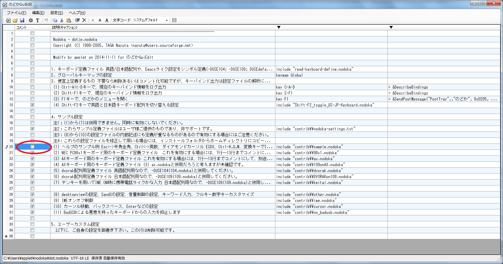
図１２. サンプルの設定ファイルを使うために、デフォルトのdot.nodokaでの該当行のコメントのチェックを外して、有効にする。
続いて、この20行目をダブルクリックするか、右クリックメニューにて、「includeファイルを開く」 を選んで、contribフォルダーのsample.nodokaファイルを開きます。
開いた時の画面が、下記図13となります。
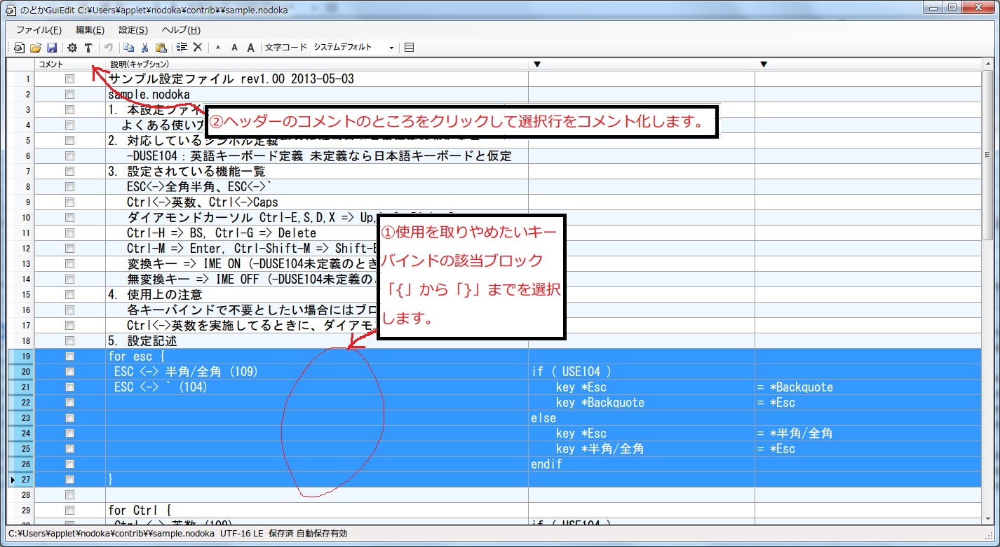
図１３．サンプルの設定ファイル sample.nodoka
サンプルの設定ファイルでは、複数のキーバインドの記述が存在しますが、サンプルということもあり、すべての記述が有効になっています。しかしながら、実際には、使わない設定もあると考えます。そこで、18行目以降、①使用を取りやめたいキーバインドがある場合、該当ブロックの「{」から「}」までの行を選択して、②左上のヘッダーのコメントのところをクリックすると選択行のコメント化(無効化)が設定可能となります。再度クリックすると、コメントを外して、有効化することもできます。
編集作業が終了したら、画面上部の左から3番目のボタンをクリックして、保存してから、終了してください。
このように、すでに用意された設定をオンオフされるだけで良い場合には、コメントのチェックボックスだけで実施可能なので、このサンプルを編集して保存することで実現可能です。なお実際に使い始めた際に実施したほうが良いことで示したように、contribフォルダと該当ファイルが、ホームディレクトリにあることが前提になっているので、ご注意ください。
(2) カーソル系設定(cursor.nodoka)
他にもサンプルの設定ファイルはありますが、このヘルプでは、次に、カーソル系の設定（cursor.nodoka)の説明をします。図１２では、30行目で、includeする記述がある cursor.nodoka を実際に開いてみると、下記のような設定となっています。
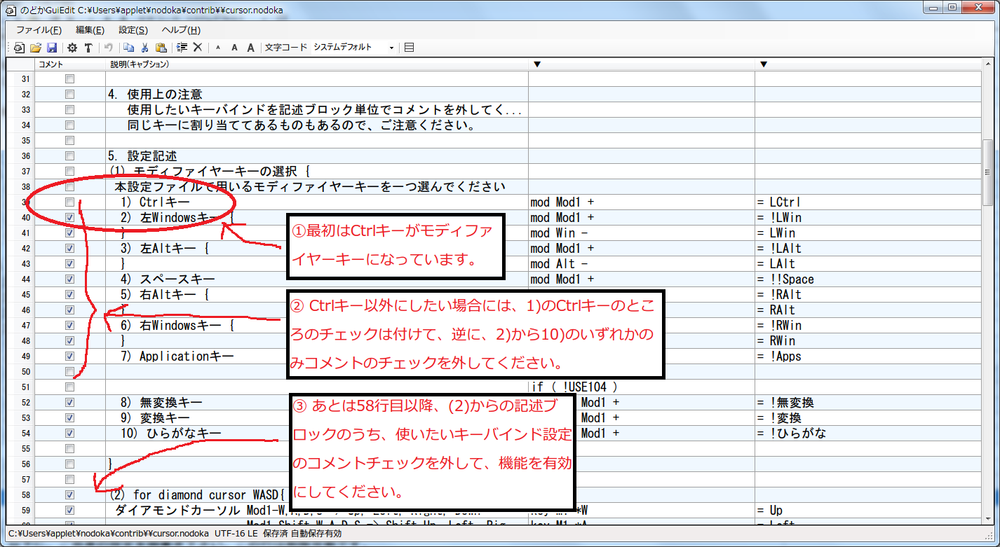
図１４. カーソル系の設定サンプル(cursor.nodoka)を開いた画面
このcursor.nodokaでは、カーソル移動のキーバインド設定などを、モディファイヤーキー(Ctrlキーなど、そのキーを押しながら別のキーを押すと、異なるキー入力とする 、すなわちモディファイするために押すキーのこと)と、ともに英字キーを押すことで実現させようとしています。
まず、39行目、①最初はCtrlキーがモディファイヤーキーになっていることを確認してください。ここで、② Ctrlkキー以外のキーをモディファイヤーキーにしたい場合には、39行目の1)Ctrlキーには、コメントのチェックを付け無効にした後で、40行目から54行目までの2)から10)まで、有効にしたいモディファイヤーキーを選んで、コメントのチェックを外してください。
そして、③あとは58行目以降の(2)からの記述ブロックのうち、使いたいキーバインド設定の該当ブロックの「{」から「}」までの行において、コメントのチェックを外して、機能を有効にしてください。
本設定ファイルでは、同じキーに対するキーバインド変更が多数記載されているので、誤ってチェックを外したり、付け忘れたりすると機能しないことがあります。
のどかGuiEditによる設定ファイルの編集が終了し、保存したならば、「のどか」側の設定ダイアログにおいて、編集を行った設定ファイルを選択して、再読み込みボタンを押して、読み込ましてみてください。
正常に読み込みが行われたならば、「のどか」のログウィンドウに、「successfully loaded.」と表示されます。
もし、正しく機能していないようであれば、まずログウィンドウにて、編集した設定ファイルに対する「loading」表示があることを確認し、もし無いようならば、のどかの設定ダイアログでの設定ファイルの指定の確認を実施してください。
また、何かエラーメッセージが出ていたり、include文でインクルードした設定ファイルが読み込めていないようならば、設定ファイルの再編集に戻って再確認してみてください。
なお、デフォルトのdot.nodoka設定ファイルが、正しく読めている場合には、図１２の11行で、設定されているShift-F1キーを押すと、のどかのログウィンドウに、現在のウィンドウに対するキーバインド一覧が表示されます。
-
仕様、制限事項、バグ
下記に示す仕様、制限事項、バグが存在します。将来的にはすべての制限事項の撤廃が目標となりますが、実現困難な場合には仕様として確定することがあります。
なお現在、制限事項だが仕様という形になっているものが、将来改善する可能性もあります。また、使い勝手の向上やご要望、バグ報告などに対し、緊急性や工数に応じて優先順位づけすることがあります。
(1) 仕様
1) キャプションを入れた行は 文末の\で、次の行にネストすることが出来ません。(キャプションを文末のコメント文で実現しているため)
2) ファイル保存時に必ずバックアップファイルを作成します。
3) キャプション、コメント文のいずれも、設定ファイル上は、コメント文であり、また機能のオンオフは行頭のコメント行で実現しています。
そのため、文頭の空白や、文頭に#が複数個有る場合には、1個となります。なおキャプションのみの行は、"# #"。あるいは、" #"で始まります。
4) 元々の設定ファイルにタブ記号が含まれる場合、8個の空白に置き換わります。またタブを入力することはできません。これはDataGridViewと呼ばれる部品の仕様となります。
(2) 制限事項あるいはバグ
1) 文字コードは複数の文字コードに対応しています。ただし、ときどき文字コードを誤って読み込むことがあります 。右上の文字コードの選択を変更してください。
設定ファイルを壊す危険性があるため、必ずバックアップを作成します 。ファイルが壊れることもあることにご留意し、バックアップを別途別の場所に保存されることを、お勧めします。
2) 編集入力により設定ファイルが変更されているときには、自動保存あるいは、未保存時に確認ダイアログを出すようになっていますが、その認識に失敗し、保存済と判断することがあります。
3) 設定ファイルが文法上おかしかったり、最小限必要なinclude文やkeymap文が存在しなくても、のどかGuiEdit側では一切チェックしていないので、「のどか」本体で読み込ませたときにエラーとなることがあります。
4) 設定ファイルをdrap&dropでロードすることはできません。
5) ファイルオープン、クローズ時に、以前のフォルダを覚えないことがあります。
6) 設定ファイルがシンボリックリンクの場合は読み込めません。
7) Undoや印刷機能、検索、置換、ジャンプ機能、設定などはまだ実装されていません。
8)表示フォントを変更できません。
9) Windows 8ストアアプリではありません。
10) 複数起動可能ですが、自動保存や、104/109キーボードの設定および、設定ダイアログの設定は、双方に反映され、個別には機能しません。
11)右クリックによるショートカットがありません。
12) 直接入力した場合、コマンドの左辺と右辺の間に=(等号)が必要な場合にでも自動的に入りません。
13)コピー、カット、ペースト、行挿入、行削除ボタンは、行選択の時のみ有効です。
14) コマンド挿入ウィザードでは、サポートしていないコマンドが多くあり、リストに出てくるものの中でサポートしているものは、keymap, key, mod, includeのみです。
またkeyseq定義されたものや、ファンクションなどはサポートできていません。
15) キー名称などは、109.nodokaなどを読み込んで定義されているものを使用していません。
16) コマンド挿入ウィザードでは、タブ間の移動の際、以前の設定がクリアされず、入力しようとしているコマンドとは異なる場合があります。
17) また、タブが不要な場合でも削除されずに、無用なタブやコントロール部品が残ったままとなります。
18) モディファイヤーのウィザード入力において、選択できないモディファイヤーが存在します。~や、U-、D-などは手動入力する必要があります。
19) Windowクラス名、タイトル名、バイナリ名を取得する機能はありません。
20)終了時のウィンドウの大きさ、位置は保存されません。
21) 英語版は存在しません。
22) 行ではなく、セルのみ選択中にInsertキーは行の追加となりますが、Deleteキーは行削除となりません。画面上部のメニューやボタン、右クリックメニューは機能します。
上記以外にも未確認の不具合などが存在することがあります。
-
著作権、ライセンス、使用許諾条件
著作権は、合同会社アプレット applet@bp.iij4u.or.jp にあります。
また、ライセンスや使用許諾条件は、お使いの「のどか」本体と同じとなります。
-
バージョン履歴
2014-11-15 1.03 修正
・起動時にウィンドウサイズがおかしく、幅や高さがそれぞれ150, 50未満だったら、デフォルト値に戻すようにしました。
・本ヘルプ上おいて、BadUSB対策用の設定行が存在する のどか4.27付属のdot.nodokaを読み込んだ画面イメージに変更しました。
2013-05-04 1.02 機能追加あるいは制限事項の一部改修
・include文の記述がある行から、そのincludeファイルを開けるようにしました。
・コピー、カット、ペースト、行挿入、行削除は行単位ですが、行全体が選択されずに、セルだけが選択されている状態でも機能するように修正しました。(制限事項 #13, #22)
・設定ファイルの文字コードが選択できるようになりました。(制限事項 #1の一部)
・設定ダイアログを用意し、ウィンドウやフォントなどの設定がカスタマイズできるようになりました。(制限事項 #8, #20)
・設定ダイアログから、設定ファイル保存先であるホームディレクトリをExplorerで開けるようになりました。
・読み取り専用ファイルの場合、上書き保存できないようにしました。また読み取り専用で再読み込みする機能を追加しました。
・本ヘルプにおいて、サンプルの設定ファイルの編集方法に関する記述を追加しました。
2013-04-10 1.01 修正
・キャプションだけの行を入力して保存して再度読み込むと、コマンドの左辺に移動していましたが、正しくキャプションの位置に格納されるように直しました。
もし既存の設定ファイルにおいて、コメント行だけで構成されている場合、一般には行頭の最初から"#"で始まっていると考えますが、"# #"に変更すると、のどかGuiEditでは、キャプションとして扱われるようになります。
・右クリックによるショートカットは実装されています。ただし、行選択が必要です。(制限事項#11)
・起動時のスプラッシュウィンドウを付けました。
2013-04-07 1.00 1stリリース。